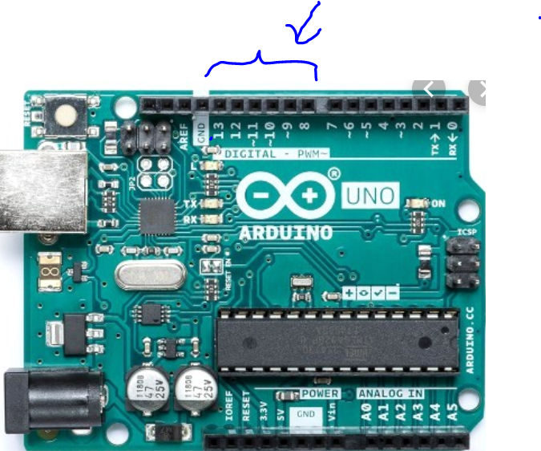
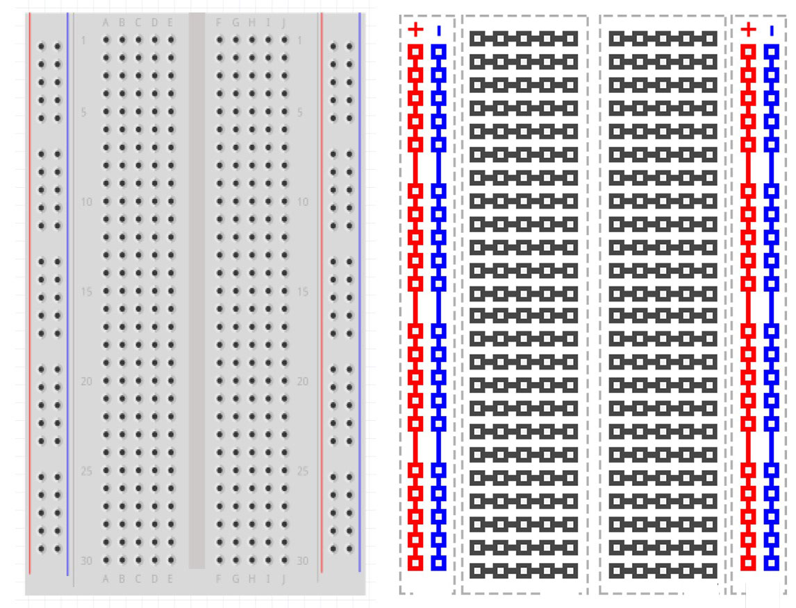
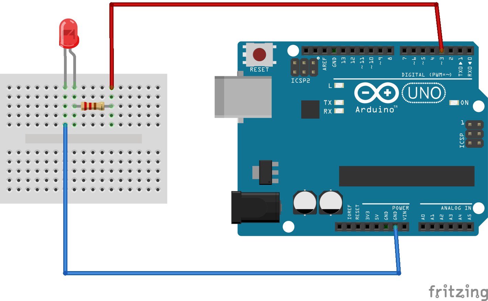
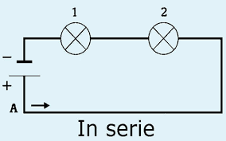

Als je in de doos kijkt van je arduino zal je zeker de volgende dingen zien (je zal ze allemaal nodig hebben)
de arduino zelf, deze ziet er als volgt uit:
het bord

deze zal je veel nodig hebben om alles erop aan te sluiten en deze te verbinden met je arduino.
de usb kabel waarmee je de arduino en de pc met elkaar kunt verbinden

je ledjes (je zal er meerdere hebben en in verschillende kleuren)

de draadjes

deze heb je nodig om alles op elkaar aan te sluiten, je mag die plooien, want dit kan geen kwaad
de lichtsensor
Download s4a (scratch for arduino) klik hier om het te downloaden . Download het hele pakket, dan kan je op "next" klikken.

| nummers | uitleg |
|---|---|
| 1 | Hier kun je kiezen welk type blokjes je nodig hebt |
| 2 | Hieruit kun je blokjes kiezen en ze naar je "script" slepen. Ieder blokje heeft een specifieke functie. |
| 3 |
Hier moet je je blokjes naartoe slepen, en aan elkaar hangen. Je arduino zal alles van boven naar beneden uitvoeren zodra je of het groen vlaggetje klikt (5). De blokjes die je hier naartoe gesleept hebt vormen je "script" |
| 4 | Hieraan kun je zien of je arduino correct aangesloten is aan je pc. Als het goed is aangesloten krijg je een afbeelding van het bord .Indien niet komt er "bord wordt gezocht "op. |
| 5 | Het vlaggetje dat ervoor zorgt dat je "script" start als je er op drukt.Ernaast is er een rood bolletje (stopteken) dat er voor zorgt dat je "script" stopt. |
| blokjes | functie |
|---|---|
 | Dit is bijna altijd je eerste blokje die je nodig hebt. Die plaats je altijd vanboven in je script. De functie van de blokjes die je er onder hebt geplaatst zal uitgevoerd worden.(Deze staat bij besturen.) |
 | Hier kan je de digitale poort op je arduino aanzetten waardoor er stroom komt te staan op die poort. Als je alles goed aangesloten hebt aan die poort zullen er bv. aangesloten lichtjes moeten branden (dit leer je nog in deze cursus.) Dat zijn de poorten die hiernaast met een accolade aangeduid zijn. Als je bv digitaal 13 hebt aangeduid in je code moet je er ook voor zorgen dat je poort 13 met je bord hebt verbonden. (dit is de energiebron ) |
 | Met dit blokje zet je de aangeduide digitale poort weer uit. |
De andere blokken spreken voor zich, heb je niet nodig in deze cursus of worden later nog uitgelegd wanneer ze wel relevant worden.
Nu gaan we alles dat je in de vorige instructies geleerd hebt samenvoegen en toepassen.
Dit is hoe het bord onderling verbonden is van binnen.

Op deze manier moet je ervoor zorgen dat je een gesloten kring bekomt die begint in digitaal 10-13 en eindigd in de GND (zijn beiden poorten op je arduino)
Op de volgende manier kan je een lichtje laten branden. Je hebt 2 draadje nodig, een ledje en een weerstand. Verbindt deze zoals hieronder op de afbeelding. Aan het ledje heb je twee draadjes, (een lange en een kortere). De langste moet het dichtst bij de energiebron (digitale poort) verbonden worden. Als je dit niet juist doet dan zal je ledje niet branden.
dus voor de duidelijkheid je moet je ledje als volgd aansluiten:


Op je script gebruik je volgende blokjes . Links bovenaan vind je de knoppen met de hoofdfuncties vb: bewegen,besturen, waarnemen. Je zal zien dat elk soort blokje een bepaald kleur heeft. Als je een hoofdfunctie aanklikt verschijnen er verschillende blokjes links in beeld waaruit je kan kiezen. In dit geval is je eerste blokje het oranje blokje op de foto hieronder: je vindt deze onder de hoofdfunctie : besturen.

Je draadje verbond je van poort 13 naar je bord. Dus moet je nu een blokje aan je script toevoegen die zorgt dat digitale poort 13 aanstaat. Je kan zelf het nummer aanpassen via het zwarte pijltje naast het cijfer. Het is belangrijk dat je draadje op je arduino in dezelfde poort zit als aangegeven op je script.

Probeer nu op dezelfde manier de blokjes te verbinden zoals op de afbeelding hierboven. Als je dit juist hebt gedaan dan zal het ledje knipperen. De duur van het knipperen kan je aanpassen op het blokje ' wacht... tellen'.
Probeer hetzelfde nu te bekomen nadat je het ledje verplaatst hebt met één of meerdere kabels indien nodig (denk eraan dat je kring gesloten moet zijn en dat je ledje in de juiste richting staat)
Dit is wat je had.
Je kan weten of je oefening juist is door te kijken of je lichtje effectief brandt / flikkert(bij het klikken op de startknop), als dit niet het geval is komt er nog een ander vorbeeld op als je op "next" drukt.
Dit is een voorbeeld van een juiste oefening (als je lichtje brandt / flikkert is de oefenning juist).

Het rode draadje moet wel nog steeds in digital 10-13 zitten.
Je kan ook proberen om meerdere lichtjes tegerlijkertijd te laten branden die met elkaar verbonden zijn in serie :
(dit is een voorbeeld van een elektrisch schema waarbij de lichtjes in serie verbonden zijn) . probeer nu het zelfde maar met de arduino. Je hebt daarvoor 5 draadjes, 2 ledjes en 1 weerstand nodig.
Als je dit gedaan hebt klik dan op 'next' om de oplossing te krijgen.
